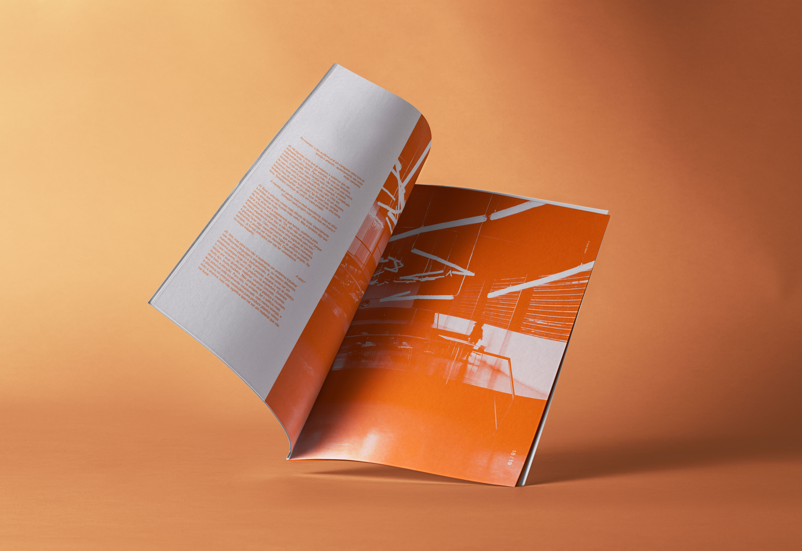
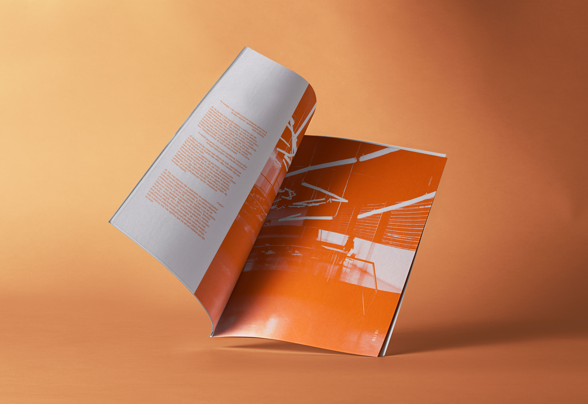

REVISTA SANAA
Tipo de trabalho: Design Editorial
Desenvolvimento do layout completo de uma revista de arquitetura, com um diferencial cromático marcante: o uso estratégico do laranja como cor de acento. O projeto explora grelhas estruturadas com contraste entre rigidez arquitetónica e vitalidade visual.


 
